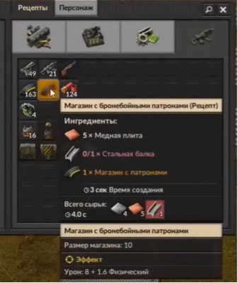
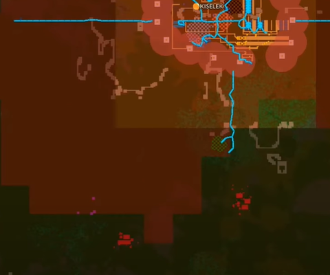
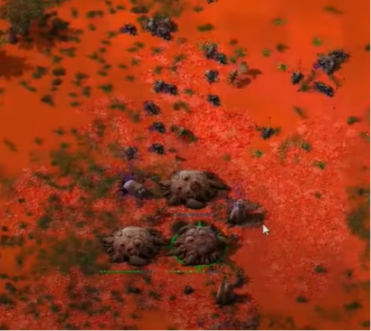

Нападение на кусак
Наше производство растёт и загрязнение соответственно тоже, поэтому самое время зачистить ближайшие гнёзда кусак.
Ранее мы изучали кое-что из военной промышленности и это сейчас нам пригодится.

Минимальный набор для нападения:
- Броня
- Бронебойные патроны (минимум 200 шт.)
- Пистолет-автомат
- Гранаты
Для нападения лучше использовать пистолет-пулемёт, так как он наносит достаточно большой урок и имеет высокую скорострельность, в отличии от дробовика.
Когда минимальный набор у нас изготовился, нападаем на ближайшие гнёзда, чтобы кусаки не разрушали нашу базу.

